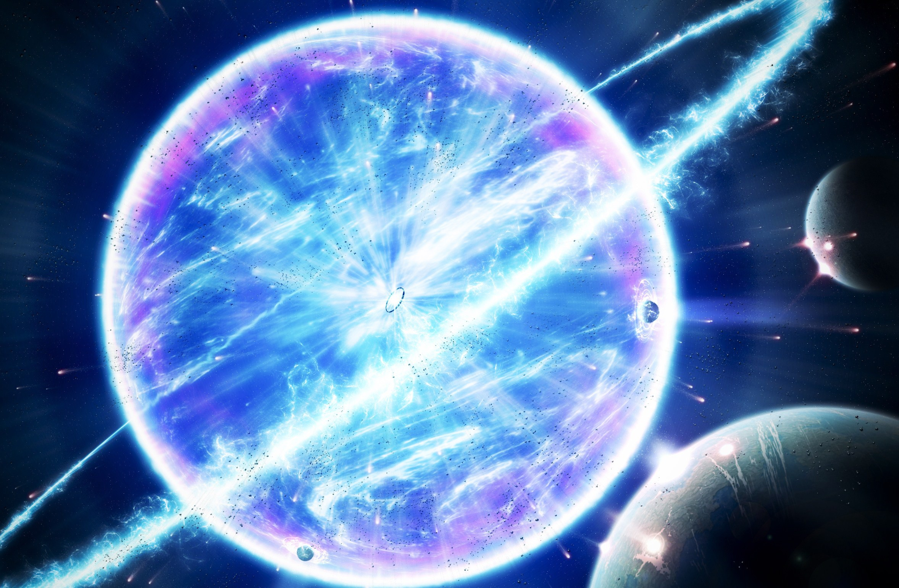

About
A white dwarf, also called a degenerate dwarf, is a stellar core remnant composed mostly of electron-degenerate matter. A white dwarf is very dense: its mass is comparable to that of the Sun, while its volume is comparable to that of Earth. A white dwarf's faint luminosity comes from the emission of stored thermal energy; no fusion takes place in a white dwarf wherein mass is converted to energy. The nearest known white dwarf is Sirius B, at 8.6 light years, the smaller component of the Sirius binary star. There are currently thought to be eight white dwarfs among the hundred star systems nearest the Sun.The unusual faintness of white dwarfs was first recognized in 1910.The name white dwarf was coined by Willem Luyten in 1922. The universe has not existed long enough to experience a white dwarf releasing all of its energy as it will take many billions of years.
White dwarfs are thought to be the final evolutionary state of stars whose mass is not high enough to become a neutron star, which would include the Sun and over 97% of the other stars in the Milky Way.After the hydrogen-fusing period of a main-sequence star of low or medium mass ends, such a star will expand to a red giant during which it fuses helium to carbon and oxygen in its core by the triple-alpha process. If a red giant has insufficient mass to generate the core temperatures, around 1 billion K, required to fuse carbon, an inert mass of carbon and oxygen will build up at its center. After such a star sheds its outer layers and forms a planetary nebula, it will leave behind a core, which is the remnant white dwarf.Usually, white dwarfs are composed of carbon and oxygen. If the mass of the progenitor is between 8 and 10.5 solar masses (M☉), the core temperature will be sufficient to fuse carbon but not neon, in which case an oxygen–neon–magnesium white dwarf may form.Stars of very low mass will not be able to fuse helium, hence, a helium white dwarf may form by mass loss in binary systems.
The material in a white dwarf no longer undergoes fusion reactions, so the star has no source of energy. As a result, it cannot support itself by the heat generated by fusion against gravitational collapse, but is supported only by electron degeneracy pressure, causing it to be extremely dense. The physics of degeneracy yields a maximum mass for a non-rotating white dwarf, the Chandrasekhar limit—approximately 1.44 times of M☉—beyond which it cannot be supported by electron degeneracy pressure. A carbon-oxygen white dwarf that approaches this mass limit, typically by mass transfer from a companion star, may explode as a type Ia supernova via a process known as carbon detonation.(SN 1006 is thought to be a famous example.)
A white dwarf is very hot when it forms, but because it has no source of energy, it will gradually radiate its energy and cool. This means that its radiation, which initially has a high color temperature, will lessen and redden with time. Over a very long time, a white dwarf will cool and its material will begin to crystallize (starting with the core). The star's low temperature means it will no longer emit significant heat or light, and it will become a cold black dwarf.Because the length of time it takes for a white dwarf to reach this state is calculated to be longer than the current age of the universe (approximately 13.8 billion years),it is thought that no black dwarfs yet exist.The oldest white dwarfs still radiate at temperatures of a few thousand kelvins.